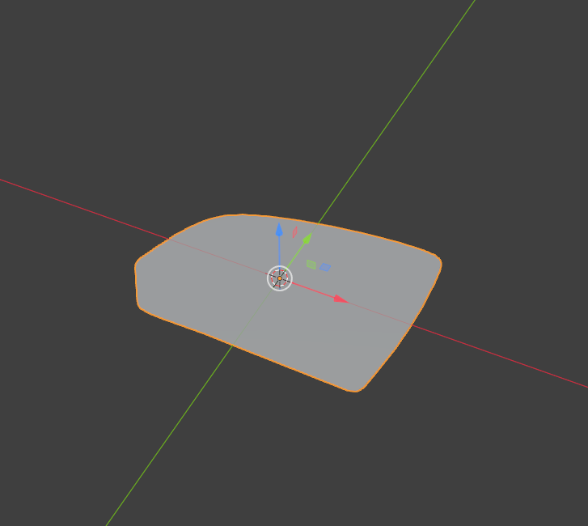
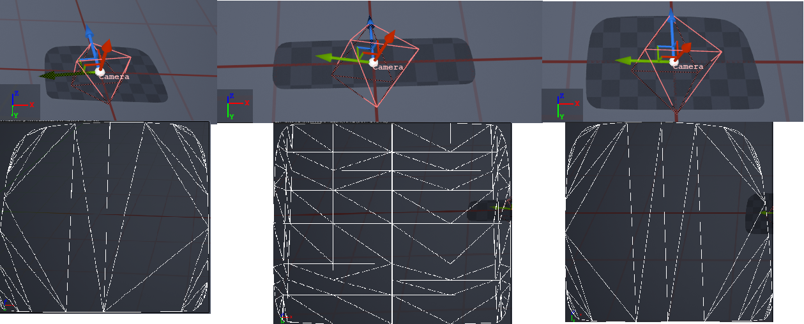
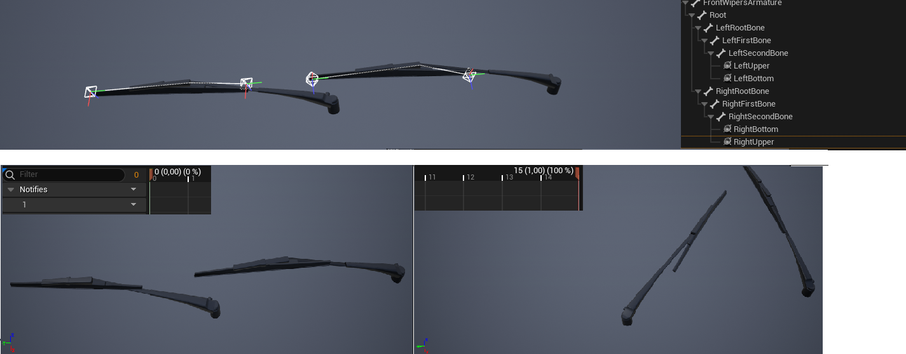

Navigation: README | 01. Minimal Car | 02. Exterior, Lights & World | 03. Interior, Dashboard & Cameras | 04. Mirrors & Wipers | 05. Sounds & FMOD | 06. Specs, Logic & Reference
In this module, you will configure two key driving-simulator features:
Mirror)Mirror reflections in City Car Driving 2.0 are powered by render cameras bound to separate reflective surface meshes.

+Z axis defines the reflective face normal (pointing straight up along +Z, with the mirror surface lying in the XY plane!).+Y axis points downward along the mirror glass.(This alignment is required by the UV generation script, which projects vertex X and Y coordinates.)
Import Collisions = OFF, Fallback Collision Type = OFF (None), Import Materials = OFF, Build Nanite = OFF.MI_Mod_Mirror is only for the center mirror housing, not the reflective glass.)Camera Socket & Generating UVs in UERepeat these 2 steps for every mirror Static Mesh:
Camera Socket+ (Create Socket).Camera.Relative Rotation as needed — this rotation determines where the mirror capture camera looks.
Generate UVs by Vertex Positions)Scripted Asset Actions → UV → Generate UVs by Vertex Positions
Allow CPU Access.Ctrl + S or RMB → Save) so the * icon disappears!
V_<ModName>StaticMeshComponent for each mirror (e.g., under Body for side mirrors and InteriorObjects for the center mirror), with NoCollision and Receives Decals = False.Asset User Data → Control Asset Data → ControlBlock named Mirror:
FOV of type Control Property Float (mirror camera field of view in degrees).FOV range: 20–40 (higher values hurt performance and distort distance perception).Wippers)Wipers in City Car Driving 2.0 are driven by skeletal animation.

Animation Sequence must contain only the first half of the cycle — sweeping from the resting (bottom) position to the extreme (top) position! The game plays the return stroke automatically.
.fbx into MyFirstCar/Meshes/. In the import dialog:
Skeletal Mesh and Import Animations.Import Collisions / Fallback Collision Type / Physics Asset creation if not needed, and uncheck Import Materials.Skeletal Mesh, Skeleton, and Animation Sequence.MI_Mod_Wipers (Content/Common/MasterMaterials/VehicleMaterials/ModMaterials/MI_Mod_Wipers) and assign it to the Skeletal Mesh.About wiper wiping-zone sockets (visible in CieBensVGruppe):
If you inspect SM_CieBensVGruppe_Wipers, you will see sockets like LeftUpper, LeftBottom, RightUpper, RightBottom on the bones. Wiper sockets are currently NOT used in modded vehicles and do not need to be created (glass raindrop wiping is not yet enabled for mods).
V_<ModName>Watch the exact ControlBlock spelling:
In the game code, this block is spelled Wippers — with two ps! Writing Wipers will cause wipers not to work.
V_<ModName> and add a Skeletal Mesh component (+ Add → Skeletal Mesh) with NoCollision and Receives Decals = False.Skeletal Mesh.Use Animation Asset.Animation Sequence (first half of the sweep).Asset User Data → Control Asset Data → ControlBlock named Wippers:
Side of type Control Property String:
Front — for front wipers;Rear — for the rear wiper.FrontWindshieldWiper_Resistance > 0 (and BackWindshieldWiper_Resistance > 0 if you have a rear wiper) is set in [CarElectrics] inside Vehicle.ini.Next step: continue to Module 5. Vehicle Sounds & FMOD Studio to customize your car's audio.